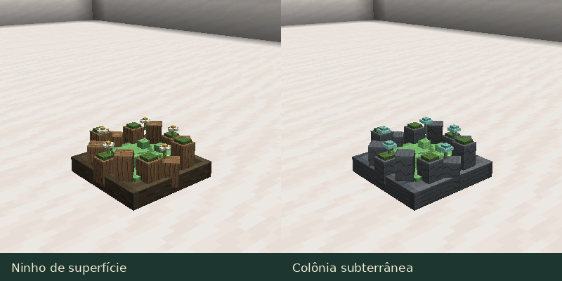

Ecosystem and Habitats
Finding slimes
The 21 natural species spawn in suitable environments, in darkness, outside Peaceful difficulty, and subject to space and population limits. The other 26 forms come from breeding or metamorphosis; see the species gallery.
| Environment | Natural species examples |
|---|---|
| Plains and forests | Common, Moss, Wind |
| Swamps and mangroves | Mud, Venom |
| Mushroom fields | Fungal |
| Rivers and beaches | Water |
| Frozen regions | Ice |
| Deserts | Sand |
| Caves and mineral regions | Stone, Iron, Amethyst, Obsidian, Luminous |
| Nether | Fire, Magma, Soul |
| End | End, Void |
Specific biome permissions are configurable through datapacks. The Slimepedia records where you observed an individual, including captivity.
Food and groups
Hungry slimes seek loose compatible food, consuming nearby items with line of sight and respecting meal conditions. This does not establish a caretaker or trust: feed manually for a bond.
Social species approach calm individuals of the same species and caretaker; the sociability gene adjusts that tendency. Territorial species defend their home region, but caretaker bonding ends territorial defense. Combat, hunger, and rest change movement priorities.
Nests and colonies

Surface nests feature roots, moss, and flowers around gel. Underground colonies use stones and small glowing fungi. Both introduce limited founder groups, with Overworld and Nether variants; they are not infinite slime sources.
Frequency and population limits are adjustable in configuration. Special structures provide another exploration layer with materials and ritual locations.
Building a habitat
Provide preferred flooring and biome, space to jump, food, and limited crowding. Comfort affects recovery and breeding. House water-sensitive and fire-sensitive species appropriately. See care and capture.